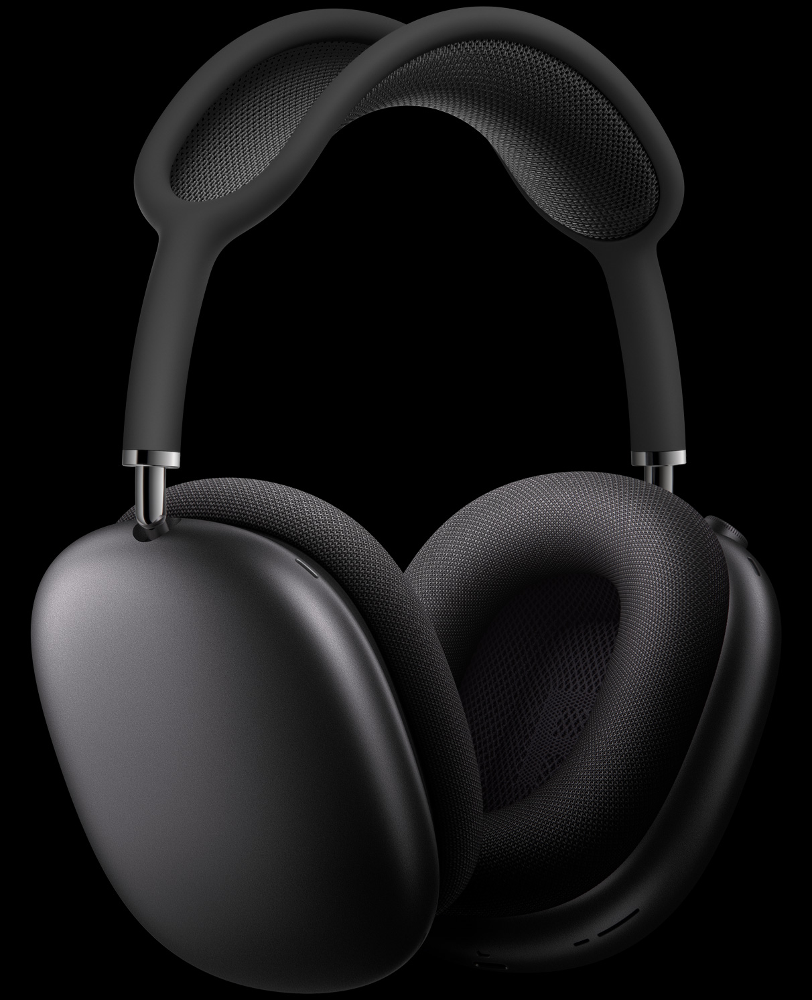
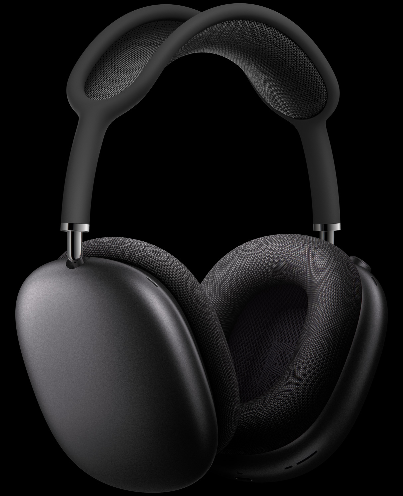

Introducing AirPods Max — a perfect balance of exhilarating high-fidelity audio and the effortless magic of AirPods. The ultimate personal listening experience is here.

The over-ear headphone has been completely reimagined. From cushion to canopy, AirPods Max are designed for an uncompromising fit that creates the optimal acoustic seal for many different head shapes — fully immersing you in every sound.


AirPods Max combine high-fidelity audio with industry-leading Active Noise Cancellation to deliver an unparalleled listening experience. Each part of their custom-built driver works to produce sound with ultra-low distortion across the audible range. From deep, rich bass to accurate mids and crisp, clean highs, you’ll hear every note with a new sense of clarity.

 

Immersive listening To cancel unwanted external sound, AirPods Max use a total of six outward-facing microphones to detect noise in your environment, and two inward-facing microphones to measure what you’re hearing. Beamforming microphones help isolate your voice on phone calls, so it’s heard clearly — even in windy situations.
Hear every detail The Apple-designed dynamic driver produces a wide frequency range that uncovers the rich details of every sound — delivering your favorite songs with previously unheard texture and accuracy.
Distortionless playback Modeled after those in high-end floor-standing speakers, the driver’s dual-neodymium ring magnet motor minimizes total harmonic distortion across the entire audible range. The result is consistently clear playback, even at full volume.
AirPods Max pause audio when you take them off, and resume playback when you put them back on. So you never miss a beat.
With Announce Notifications, Siri can automatically read important notifications from Messages, Phone, Calendar, Reminders, and more as they arrive.4 You can even tell Siri to respond — no hands required.
Get directions, check the weather, schedule a meeting, and more with a simple “Hey Siri.” With an expansive set of commands, your favorite personal assistant is more helpful than ever.4
Discover new engraving options for AirPods. Mix emoji, text, and numbers.
Buy AirPods Max